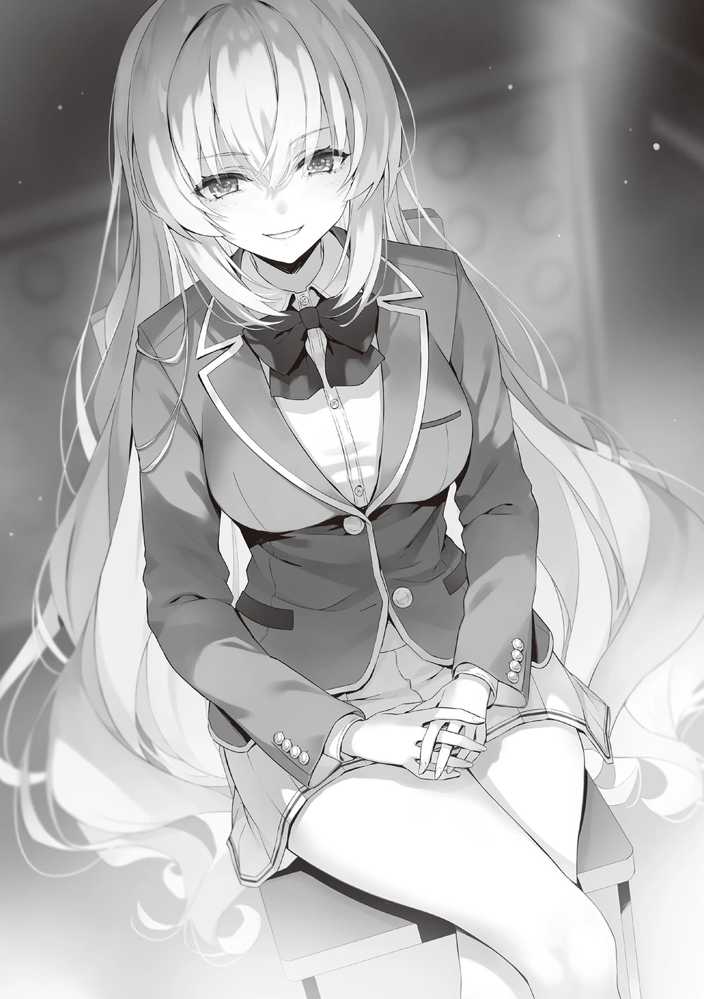

İlk turdan itibaren hem saldırırken hem de savunurken Ichinose sürekli sınıf arkadaşlarına şunu söylüyordu.
“Sınıfımızdan birinin atılmasını kesinlikle önleyeceğiz, bu yüzden gergin olmayın ve sakin kalın.”
Elbette, anlasalar bile hâlâ endişeli hisseden birçok öğrenci vardı. İşte bu yüzden Ichinose, sınıf arkadaşlarının birazcık huzurlu hissetmeleri için güven veriyordu.
Tabii ki, bunlar asılsız iddialar değil, gerçeklerdi. Ancak önceki gibi savaşırlarsa ve savunmada kalırlarsa, diğer sınıflar bu açığı acımasızca kullanırdı.
İlk hedef, kaybetme olasılığına hazırlıklı olarak elenen sınıf arkadaşlarının sayısını sıfırda tutmaktı. Hiçbir öğrenci elenmezse, en düşük sıradaki sınıfta bile herhangi bir atılma olmazdı. Savunmacı bir yaklaşım.
Ancak, Ichinose kazanmaktan vazgeçmiyordu. Peki, kazanmayı hedeflerken savunmacı bir şekilde nasıl savaşılır? – Rakibi kendi savaş alanınıza çekerek. Atılmaları önlemek için, bu senaryoyu gören rakipler, kendilerini savunmanın en öncelikli hedefleri olduğunu varsayacaktır.
İlk yarı ilerledikçe, ikinci ve üçüncü turlarla birlikte Horikita’nın amacı netleşti. Belirli sayıda insan arasında, iki kez hata yapıp atılmanın eşiğine gelen öğrencilerin sayısını artırmayı hedefliyordu. Bu sayı beşe ulaştığında, Ichinose’nin ne yapacağını test etmeyi planlıyordu.
“Teşekkürler, Horikita-san.”
Ichinose, Horikita’nın akıllıca ve şefkatli davranışı için minnettarlığını ifade etti.
Puan kazanabildikleri sürece, düşman sınıftan atılmalara yol açmak umurlarında değildi. Öyle olması gerekiyordu. Rakibin, Ryūen’in aksine sağlam ve düzenli bir şekilde saldıran Horikita olması şanstı.
Ichinose, koruma puanını öncelikle atılma eşiğindekiler için kullandı.
“Kimseyi terk etmeyeceğim. Bana inanıyorsunuz, değil mi?”
Sınıf arkadaşlarını incitmek istemiyordu. Onları kucaklamak için kollarını açtı ve pervasızca davranmayacağına dair onlara güvence verdi.

“Umarım bu sınıftan, bu yıldan ve bu okuldan hiç kimse… atılmaz.”
Bu duygular samimiydi.
Ancak, eğer sınıflarından kurbanlar olacağı anlamına geliyorsa, gerekli fedakârlıklara hazırdılar. Bu nedenle, Ryūen’in sınıfındaki öğrencileri eleme konusunda tereddüt etmediler. Zafer için, diğer sınıfları dibe çekmek zorundaydılar. Sonuçlar olarak, ilk yarının sonunda, Ryūen’in sınıfından dört öğrenci Ichinose’nin saldırıları nedeniyle elenmişti. Nihayetinde, eğer onlardan biri atılırsa, istemeden de olsa bir atılmaya katkıda bulunmuş olacaklardı. Kaçınılmaz fedakârlıklar. Kalplerindeki acıya rağmen bunu yapmaktan başka seçenekleri yoktu.
…Ama bu sadece Ryūen kaybederse geçerliydi.
“İkinci yarıya bir dakika içinde başlayacağız. Herkes yerine otursun ve hazırlansın.”
Mashima-sensei’nin sinyalini alınca, Ichinose telefonunu açtı. Yavaşça, uygulamasındaki sohbet geçmişine baktı. Belirli bir kişiyle anlaşma, ilk yarının hemen başlangıcında yapılmıştı.
[Ryūen-kun, bu biraz ani olabilir ama benimle takım olur musun? Sınıfımdan hiç kimsenin atılmasını istemiyorum. Bunu başarmak için sınavı sıfır elenmeyle bitirmemiz gerekiyor. Bu yüzden, ikinci yarıda savunma yapmanı ve sınıfımdan hiç kimsenin elenmemesini sağlamanı istiyorum.]
Özel sınav başlar başlamaz, Ichinose bu mesajı Ryūen’e gönderdi. Mesaj okunur okunmaz, bir yanıt geldi.
[Bu oldukça bencil bir istek. Seni dinleyip itaat edeceğimi mi düşünüyorsun?]
[Anlaşma yapabiliriz. Seni memnun edecek bir hediye vereceğim.]
[Hepsinden önce, Suzune’nin saldırılarını tek bir çizik dahi olmadan atlatabilir misin?]
Ryūen’den kimseyi elememe konusunda istekte bulunabilmek için, ilk yarının on turunu hiç elenme olmadan atlatması gerekiyordu.
[Bunu halledebilirim.]
[Anında bir cevap, ha? Benden önce Suzune ile anlaşmıyordun, değil mi? Eğer öyleyse, bu iş biter.]
Acemice bir yalan, oldukça temkinli olan Ryūen’e karşı işe yaramazdı. Yine de, Ichinose baştan beri Horikita ile anlaşmayı planlamıyordu. Eğer buna çalışsalardı, bir anlaşma sağlamak zor olurdu ve Sakayanagi’nin sınıfı harekete geçerdi. Bu, kaçınılması gereken bir durumdu.
[Herkesi korumak istiyorum. Hiç kimsenin elenmesini istemiyorum. Rakip amacımın bu olduğunu biliyor. Muhtemelen ilk olarak atılma eşiğindeki beş kişiyi biriktirmeyi hedefliyor. Muhtemelen bu beş kişiyi korumaya devam edip etmeyeceğimi görmek istiyor.]
Eğer bu beş kişiden birinin koruması bir kez bile atlanırsa, bir elenmeyi, hatta son sırada kalırlarsa bir atılmayı kabul etmeye hazır oldukları varsayılır. Ancak eğer korumaya devam edebilirse, saldıran Horikita için bundan daha kolay bir şey olamazdı. Değerli koruma puanlarının hepsi sürekli olarak bu beş kişiye atanırdı. Dolayısıyla, atılma eşiğindekilerin sayısını artırmadan hata yapmamış öğrencileri hedeflemeye geçerdi.
[Sen ve Sakayanagi-san’ın aksine, Horikita-san diğer sınıflardan öğrenci elenmesini istemiyor. Sadece kazanmak istiyor. Korunmayan 34 kişiye adil bir şekilde saldıracak.]
Ichinose’nin ilk yarıdaki stratejisi, cevaplarından emin olmayan öğrencilerin, ellerindeki ilk koruma puanlarını kullanarak atılma eşiğine gelmelerine bilinçli olarak izin vermekti.
Kolay bir savaş olmayacaktı, ancak eşit şartlarda savaşmak imkânsız değildi.
[Eğer bu strateji başarılı olursa ve ikinci yarıda senin talimatlarını takip edersem, kesinlikle hiçbir elenme olmayacak. Ama bu oldukça çılgınca bir fikir, değil mi? Bana ne tür bir hediye vereceksin?]
[Garanti 25 puan. Saldıracakları on turun beşinde hedeflenen kişileri sana söyleyeceğim. Tabii ki, diğer sınıfların fark etmemesi için onları akıllıca dağıtacağız.]
Ryūen eğer kimin saldırıya uğrayacağını önceden bilirse, sınavda bir avantajı olurdu.
Anında okundu bilgisi geldi, ancak düşünme süresi nedeniyle yanıt gelmesi yaklaşık üç dakika sürdü.
[Geçeceğim. Kötü bir teklif değil, ama kendi fikirlerim var.]
[Bu üzücü.]
Ichinose iyi bir teklif yaptığını düşünüyordu, ancak bundan vazgeçmekten başka seçeneği yoktu. Skorda daha fazla taviz vermek, birinci olma şansını kaybetmelerine neden olurdu. Her şeyden öte, Ryūen’in skoru artırmak için bile anlaşmaya varmadığından şansın düşük olduğunu anlayabiliyordu.
“O hâlde, belki de tam gaz gitmem gerekecek…”
Anlaşma başarısız oldu. Ichinose, daha kötü olabilecek birçok yol düşünebilirdi, ama bunu dert etmeyecekti. Riskli olsa bile, kendi başına sıfır elenme stratejisini hedeflemek zorunda kalacaktı. Ancak—
[Şanslısın.]
Tüm umutların tükendiğini düşündüğü bir anda, karşı taraftan başka bir mesaj aldı.
[Ne demek istiyorsun?]
[Eğer ilk yarıda herhangi bir elenmeyi önlemeyi başarırsan, teklifini kısmen kabul edeceğim.]
[Kısmen mi?]
[Sınıf arkadaşlarından hiçbirini elememeyi kabul edeceğim, ancak garanti ettiğin 25 puan gereksiz. Eğer ilk yarıda garip davranırsan, Sakayanagi bunu anlayacaktır.]
[Peki, ne istiyorsun?]
[İkinci yarıda saldırı ve savunma tersine döndükten sonra, gerektiğinde benden puanları al. Ayrıca detay yok. Bana güvenip güvenmeyeceğine buna göre karar ver.]
Puan vermek yerine almayı öneren gizemli bir teklif. Başka bir öğrenci bunun şaka olduğunu düşünürdü, başından beri anlaşma niyeti olmadığını düşünürdü.
“…Anlıyorum…”
Ichinose yumuşak bir şekilde mırıldandı.
Bu sefer, Ryūen’e güvenip güvenmeyeceğini düşünme sırası Ichinose’deydi. Tereddüt etmediğini söylemek yalan olurdu, sadece düşünmesi biraz zaman aldı. Yine de, Ichinose bir dakikadan kısa sürede yanıt verdi.
[Anladım. Sana güveneceğim.]
Karar verme hızı diğer öğrencilerin taklit edemeyeceği bir şeydi. Bu sadece kibarlıktan verilmiş bir karar değildi. Ichinose’nin mantığı, düşüncesi ve Ryūen’in neyi hedeflediğini anlaması buna yol açtı.
İlk mesajın gönderildiği anda, anında okundu olarak işaretlendi. Buna dayanarak, Ryūen’in de Ichinose ile iletişime geçmek istediği düşünülebilirdi. Bu, tam olarak aynı olmasalar da ortak bir noktaları olduğu veya her ikisinin de istediği bir şey olduğu anlamına geliyordu. Bu anlaşma, özel sınavın başlamasından önce gerçekleşti.
İkinci yarıda, 11. ile 14. turlar arasında durum önemli ölçüde değişti. Sakayanagi’nin sınıfının Ryūen’in sınıfına yaptığı 15. saldırı duyuruldu, ancak bir kez daha mükemmel bir şekilde savunmayı başardılar. Bunu gören Ichinose, çevresindekilerin fark etmemesi için gülümsedi.
[Bu harika! Demek hedefin buydu.]
[Sessiz ol ve önüne bak.]
[Baştan beri benimle takım olmana gerek yoktu, ama yaptın. Teşekkürler.]
[İyi niyetle mi kabul ettiğimi düşünüyorsun? Sıranın en sonunda olman bana bir fayda sağlamazdı. Sadece puanı gerektiği gibi kontrol etme yetkisini aldım.]
Gerçekten de, Ryūen’in anlaşmasında Ichinose’nin puanları almayı kabul etmesi koşulu vardı. Bu nedenle, eğer sınıfı Sakayanagi’nin sınıfına karşı kaybediyorsa, puanı artırmak ve onları zorla üçüncü veya daha yüksek bir sıraya çıkartmak basit olurdu.
Bu özel sınavın sonucunu öngören Ichinose, arkadaşlarından hiçbirini kaybetmek zorunda kalmadığı için rahatlamıştı. Ichinose oy birliği sınavı sırasında sınıf çatışmasına yol açacağı korkusuyla “Koruma Puanlarını” kullanmamayı seçmişti. Ancak, bu özel sınavın duyurusundan sonra bu kararından neredeyse pişman olmuştu.
Şu anda, Karuizawa Kei ilk hatasını yapmıştı. Eğer bir kez daha hata yaparsa, atılma eşiğine gelecekti. B Sınıfının son sıraya düşme ihtimali hâlâ vardı. Zaten elenen üyeler arasında Karuizawa’dan daha düşük rütbeli öğrenciler vardı ve onun elenme umudu çok azdı. Yine de—bir şans vardı. Ancak bunun için, art arda yapılan aday göstermelerin bir kez kesilmesi gerekiyordu.
“Hayır… Bu kötü bir hamle…”
Kendisine, kişisel duyguları için değil, sınıf için hareket etmesini hatırlattı. Ayanokōji onu reddetmezdi. Karuizawa ile ilişkisini sürdürse bile onu kabul ederdi. O zaman, her şeyi kendi başına ilerletip yeniden inşa etmenin de bir yolu vardı. Kendisinin iğrenç bir insan olduğunu fark etti, ama umursamadı.
“Birinci olamasak bile, gerçekte kazanmanın yolu Sakayanagi-san’ı son sıraya düşürmektir.”
Kısa bir süre içinde, Ichinose nefesini düzenledi. Sonra, gözlerini cep telefonuna çevirdi. Karuizawa’nın bu kadar korunmasına rağmen hedef alınmasının nedeni artık çok açıktı. Kendini tutmayı başaran Ichinose, tekrar oturdu.
“Karuizawa Kei-san’ı aday göstermek istiyorum.”
16. turda da farklı değildi, Karuizawa’nın adı aday gösterilmişti. Yenilenmiş bir kararlılıkla Ichinose tereddüt etmedi. Şimdilik bu kadar yeterliydi. Geriye kalan, acımasızca tekrarlamaktı.
“Karuizawa Kei-san’ı aday göstermek istiyorum.”
Telefonunu sıkıca tutan Ichinose, bu özel sınavdaki mutlak zaferinden emindi.